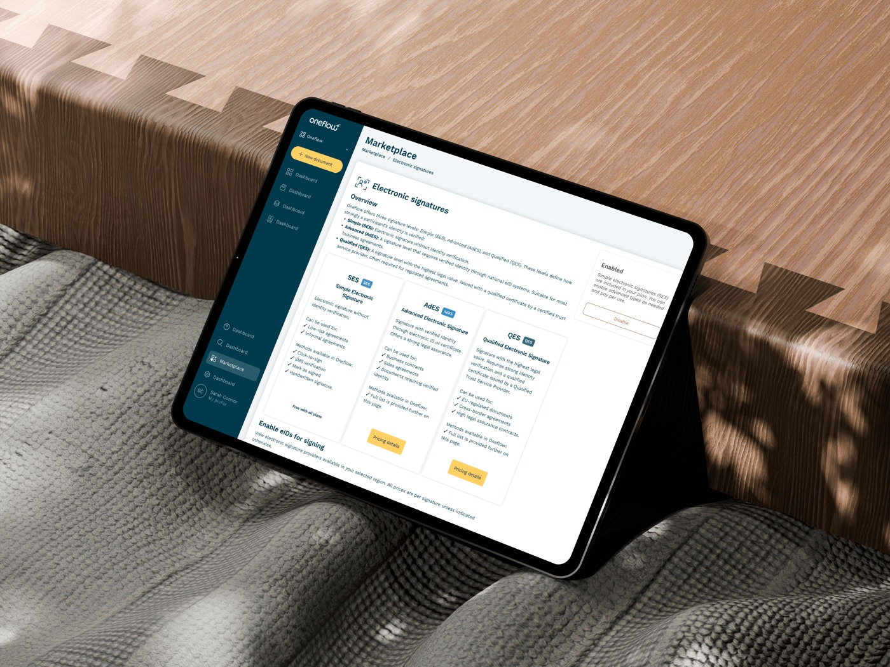
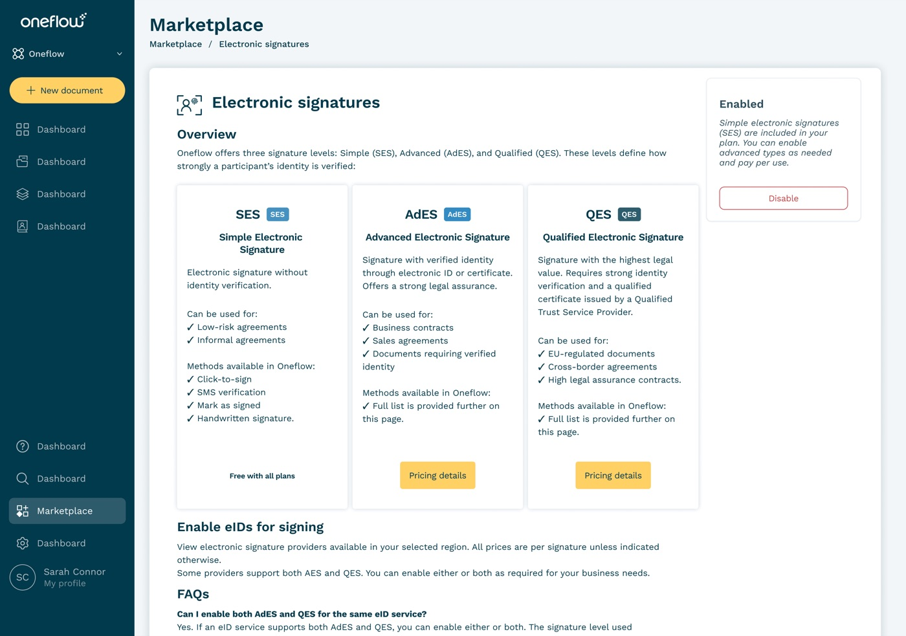
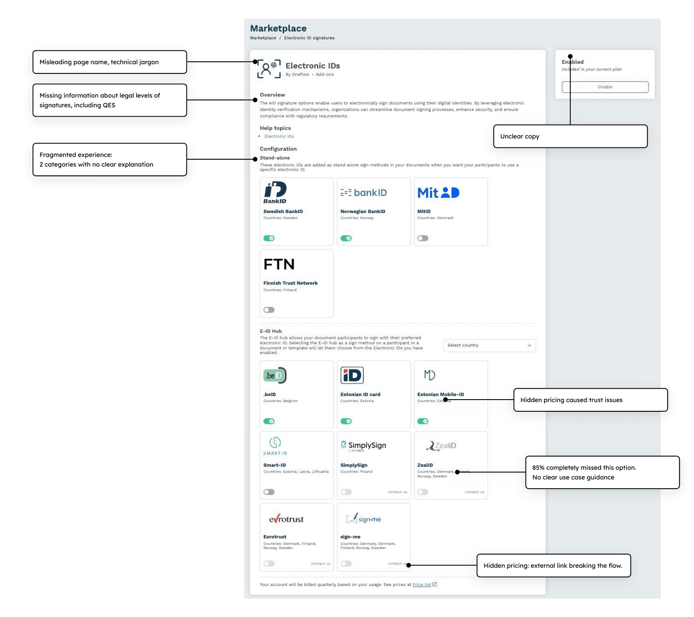
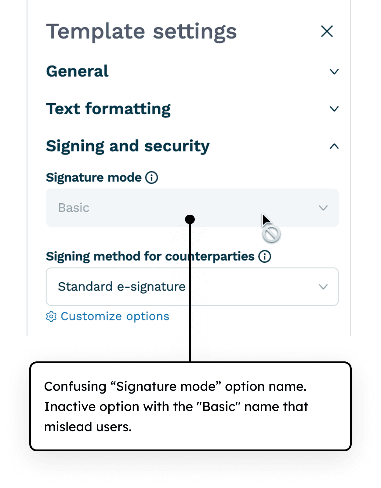
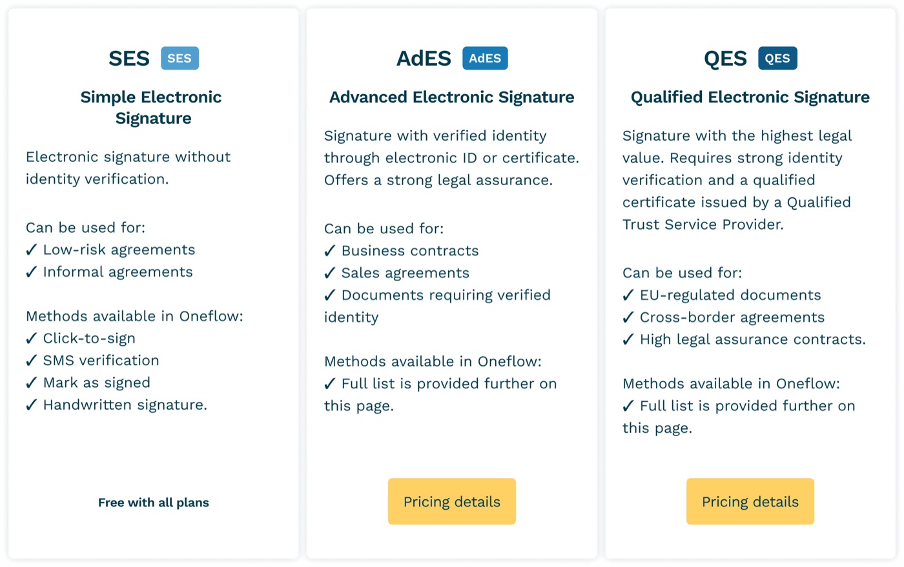
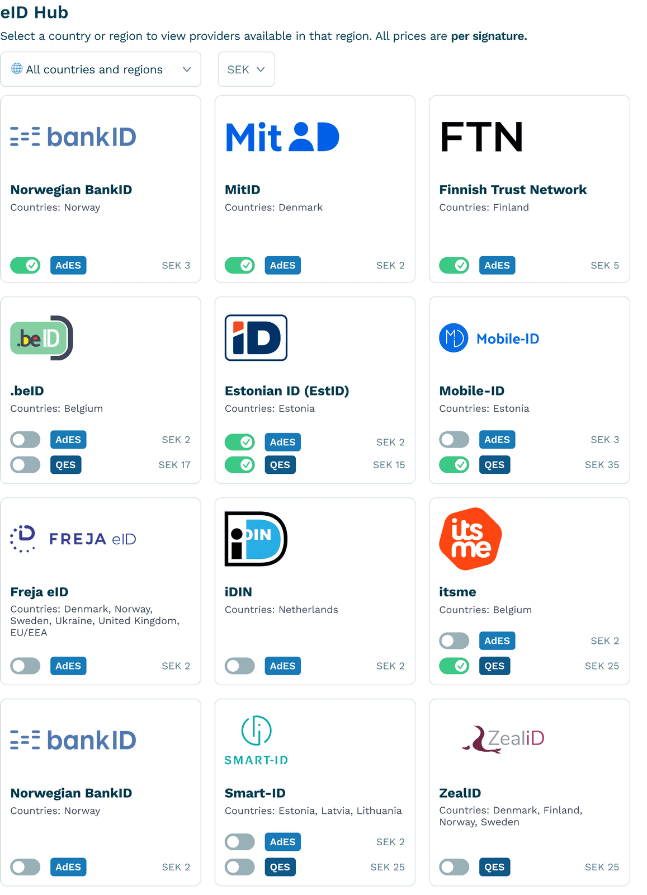
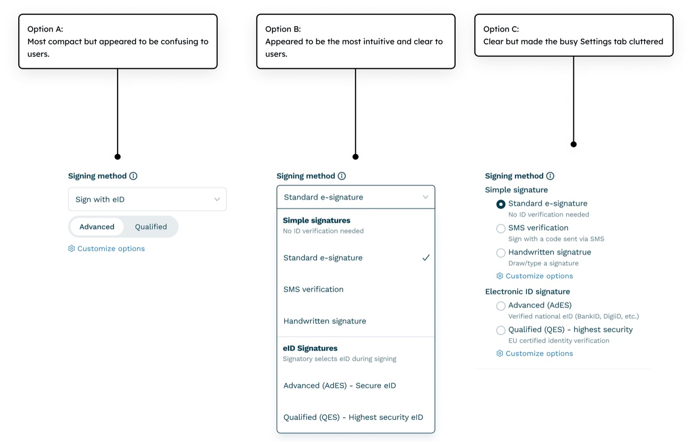
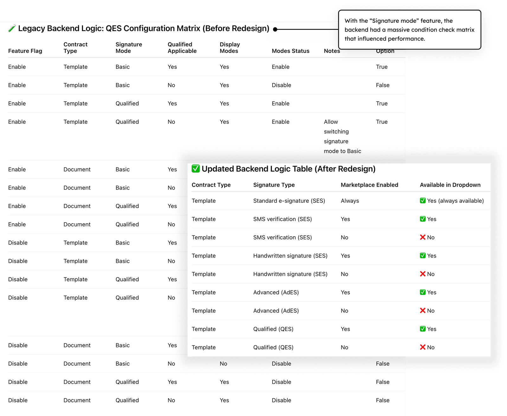
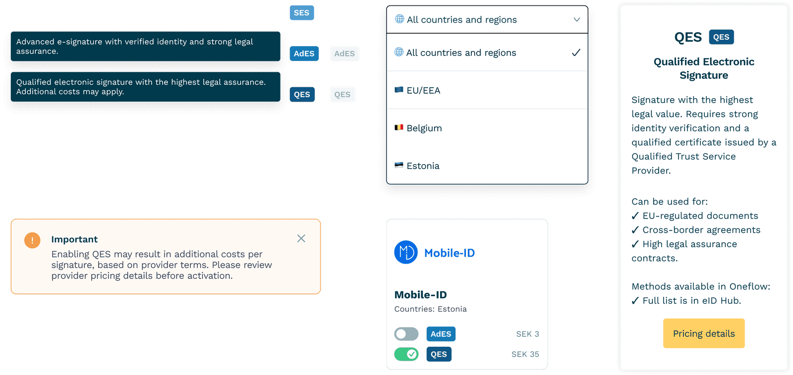

High-security contract signing
Users couldn't discover Oneflow's most secure signing option (QES), creating a major gap between product capability and adoption.


Context
Oneflow is a contract management platform for B2B teams. Most users never found its most secure signature option — QES. It was only possible to enable it through support.
Problem
Research
- Analyzed 30+ support tickets
- Interviewed 12 internal stakeholders
- Mapped signing flows for 2 key user personas
Root causes
- QES was not discoverable (disabled toggle + no in-product indicators)
- Users didn't understand signature levels (AdES vs QES vs simple signatures)
Adoption gap
My approach
- 01Marketplace IA redesignRedesigned marketplace IA to surface QES prominently
- 02QES setup flow redesignDocument and template setup redesign
- 03ValidationRan 3 testing rounds with enterprise users
- 04Design systemExtended design system with selection patterns
Results and impact
Key challenges
Why did 85% miss our most secure signature option? Users scanned the marketplace but saw no information about QES — only confusing structure and provider names. No explanations and hidden pricing.
“I didn't even know QES was an option here.”
— User quote
QES not visible
Users didn't know QES existed; toggle disabled.
Compliance uncertainty
Missing legal guidance, impossible to make compliant choices.
Hidden pricing
Hidden pricing reduced trust, blocked activation decisions.

Confusing contract template setup
Users were confused by the "Signature mode" concept and the "Basic" option that included both Advanced and Simple signatures. Many called support, worried that their signature might not be valid.
Impact: 30% increase in support tickets + users questioning signature validity.
“Why does my BankID end up under Basic? Is it no longer legally valid?”
— Customer in a support callDesign solutions
Marketplace: signature levels and pricing
I rebuilt the entire marketplace around what users actually needed: "Electronic signatures" with clear security levels — SES for simple docs, AdES for business, QES for legal protection.
Result: Obvious choices, no more guessing games.

QES enablement flow
Instead of scattered providers, I created one unified list with smart toggles. Users could enable multiple options, filter by country, and see pricing update instantly.
Result: Leveraged existing backend for speed.

Contract template setup mental model
I tested a simple question: "Where would you look to set up secure signatures?" 8 out of 8 users clicked "Signing method" immediately.
Result: Users already knew where to look. Reused existing mental model.

Backend win (bonus)
The real breakthrough wasn't visual — it was simplifying the logic. I worked with engineers to cut conditional checks from 60+ to just 4.
Result: Simpler code = faster responses. Win-win for users and engineers.

Design system updates
Extended components for: marketplace toggles, country filter, pricing card, and system messages.

Learnings and reflections
Didn't work
- Combining all providers into one list wasn't technically possible due to backend constraints
Surprised me
- Pricing transparency increased conversion
- Backend simplification (60→4 checks) was possible
Would do differently
- Test terminology with non-technical users earlier
- Involve CSM in initial research
- Push for backend unification sooner
More projects